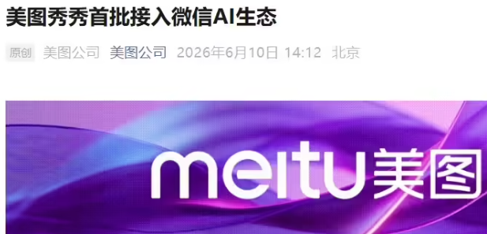
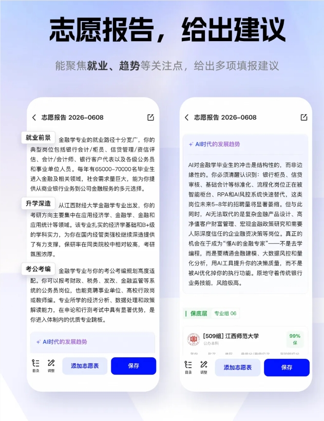
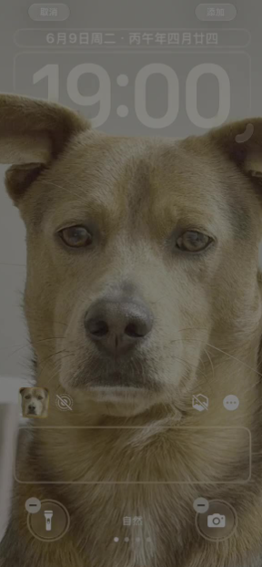
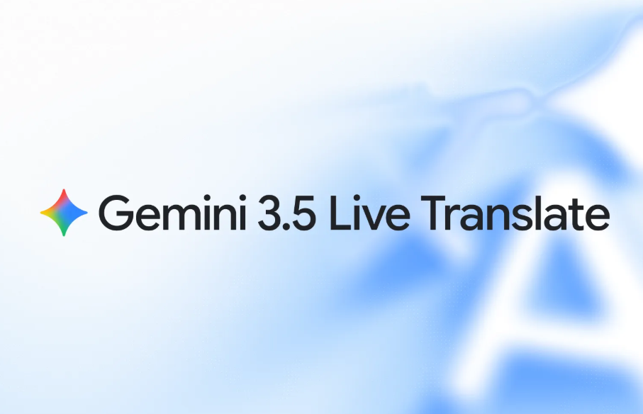
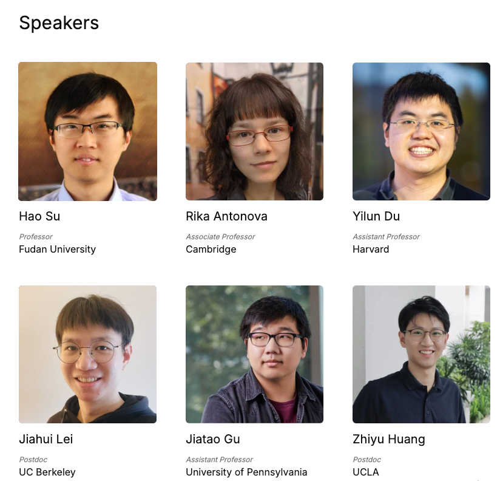
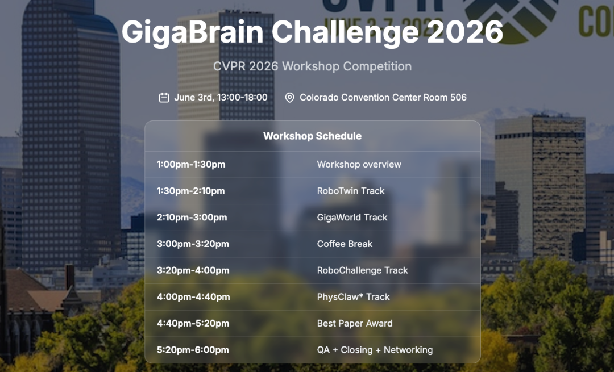
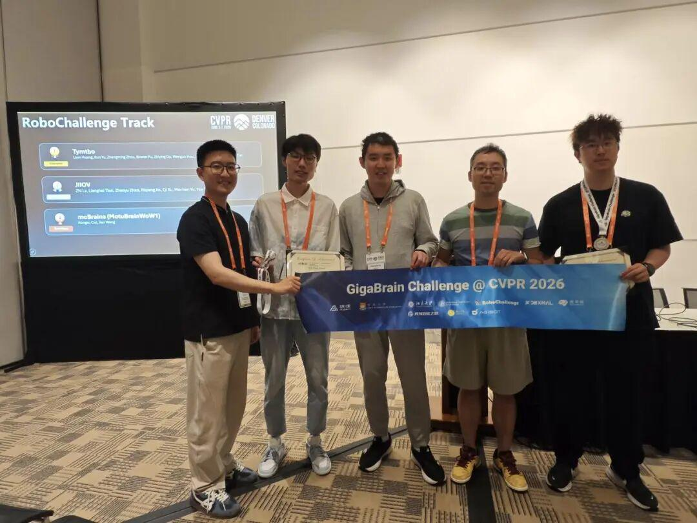
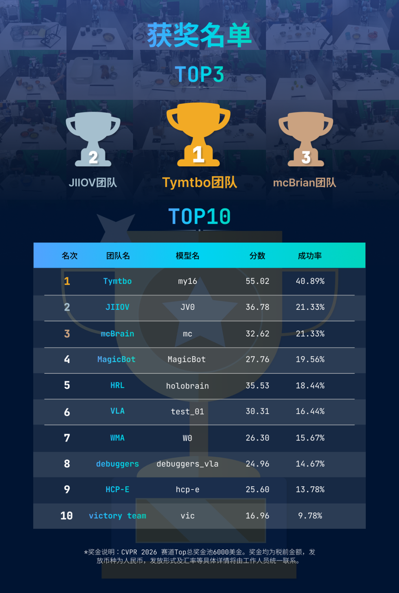
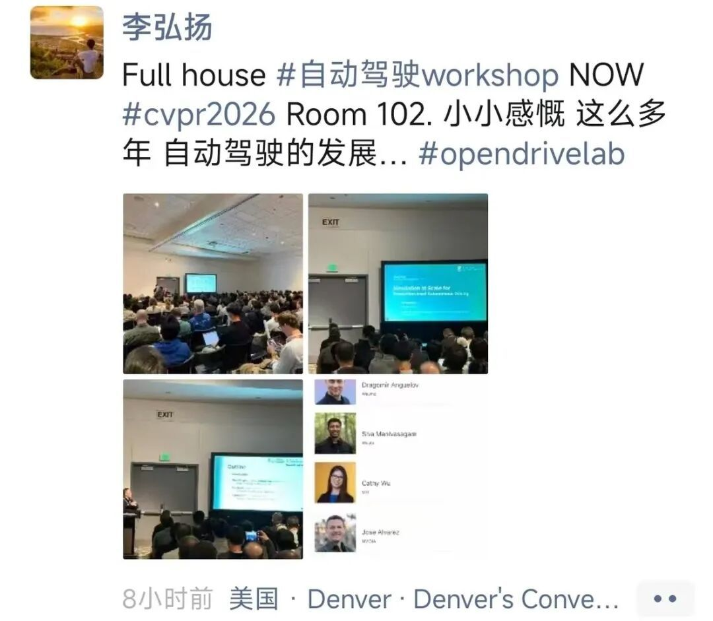

CVPR 2026 Dispatch: The Physical Divide Between Computer Vision and Robotics Has Collapsed
On June 4, as ICRA 2026 wound down along the Danube in Vienna, the Colorado Convention Center in Denver was already brimming. Numerous faces spotted in Vienna days earlier — leading academics and hard-tech executives alike — were now streaming through Denver's streets, luggage in tow.
Behind this rare transatlantic migration lies an epochal fusion of two premier conferences: CVPR and ICRA.
CVPR's Workshop sessions commenced on June 3-4 Denver time, with the main conference and awards ceremony set for June 5. Leiphone has arrived early on site to deliver this pre-conference report.
01
The Clash of 16,000 Submissions: From Perceiving the World to Grasping Physics
Official figures show CVPR 2026 drew 16,092 paper submissions, a 24% year-over-year surge. Approximately 4,090 papers were accepted, yielding a cutthroat 25.42% acceptance rate — unchanged from prior cycles.

A review of this year's paper roster and Workshop agenda confirms: while prior CVPR editions were consumed by image generation and 2D detection, Denver's core narrative has decisively pivoted to multimodal foundation models and embodied intelligence.
The shift was unmistakable in standing-room-only breakout sessions.
From the WDFM-EAI Workshop — which examined deploying vision-language-action (VLA) models in autonomous driving and robotics — to embodied sessions featuring the ManipArena real-robot competition, the message was unequivocal: computer vision has exited the screen-bound comfort zone of bounding-box recognition and is charging into the physics-governed 3D world. Vision systems are no longer content to merely sense; they now serve as the central cortex governing action.
Chinese university output underscores the trend. In CVPR 2026's institutional top 10, eight slots belong to Chinese universities: Shanghai Jiao Tong leads with 46 papers; Zhejiang follows at 40; USTC ranks third with 38. Sun Yat-sen, with 36 papers, leapfrogged both Peking and Tsinghua to claim fourth — the conference's biggest surprise.
More remarkable is Westlake University. Four researchers produced 22 papers, storming the top 10 with the highest per-capita output rate of any institution — a true academic blitzkrieg.
02
China's CVPR Contingent: Incumbents Hold, Startups Expand, the Ecosystem's Center of Gravity Shifts
Chinese scholars accounted for half of all accepted papers at last year's premier conferences. In Denver this year, that footprint is equally visible across every layer of the industry and ecosystem.
Chinese exhibitors in Denver this year span four verticals: internet platforms, foundation models, robotics, and autonomous driving.
ByteDance, Alibaba, Ant Group, Tencent, Meituan, DeepRoute.ai, Baidu, MiniMax, Unitree, Lightwheel AI, and Variable.

The official sponsor list on site reads as a register of China's AI might.
Ultimate Sponsor and Platinum Tier: Tencent claimed the premier Ultimate Sponsor designation. Alibaba Cloud, Ant Group, and ByteDance anchor the Platinum tier, reflecting Chinese tech incumbents' command of compute and foundation models. Notably, domestic foundation-model unicorn MiniMax also cracked Platinum, signaling Chinese multimodal AI firms' overseas ambition and R&D reinvestment capacity.
Gold and Silver Tier: If incumbents signify installed muscle, embodied-intelligence startups signify cutting-edge. This tier reveals a vibrant domestic network:
Sudo (Sudo Technology): Founded by renowned scholar Professor Hao Su, the embodied-intelligence standout debuted prominently in Denver, unveiling advances in reinforcement learning and physics simulation.
Leiphone reported from ICRA 2026 that Sudo's robots reliably grasped objects across diverse materials and shapes — demonstrating strong generalization.
Linkerbot: A Beijing-based robotics upstart specializing in high-DOF dexterous hands and embodied-intelligence hardware.
Nexdata (DataTang's international brand): In a data-driven era, Nexdata supplied the industry's most scarce VLM datasets and dexterous-hand teleoperation data — an exact fit for the data-infrastructure gap.
HPC AI COM (Luchen Technology): Professor Yang You's team brings Colossal-AI, a system powering open-source foundation models and video generation (e.g., Open-Sora) worldwide.
Baidu and Meituan also appeared among Gold sponsors, thickening the Chinese contingent.
Spanning compute and infrastructure (Alibaba Cloud, Luchen), multimodal foundation models (MiniMax, ByteDance), datasets (Nexdata), and embodied hardware (Sudo, Linkerbot), Chinese enterprises at CVPR 2026 have shed the 'low-tier manufacturing' tag entirely, forging an end-to-end AI value chain that bridges hardware and software.
03
Workshops in Rapid Fire: Chinese Firms Shift from Attendees to Agenda-Setters
If sponsorships signal financial heft, Workshops are where discourse is truly shaped.
Over 80 specialized symposiums packed CVPR 2026's three-day Workshop program. Chinese firms and institutions no longer just listen — they increasingly organize, setting topic direction and review criteria themselves.
WDFM-EAI: Tesla and XPENG — Pure-Vision's Twin Titans Share a Stage
On June 3, CVPR's most industry-dense dialogue took shape at the WDFM-EAI Workshop.
Tesla Autopilot and AI head Ashok Elluswamy, XPENG general manager Liu Xianming, Waymo research VP Dragomir Anguelov, and NVIDIA perception-and-robotics VP Jan Kautz shared a stage — a rare assembly of industry heavyweights.
Liu was the sole Chinese auto representative on stage — XPENG's third CVPR appearance.

Ashok's 'Building Foundational Models for Robotics at Tesla' systematically laid out Tesla's embodied-intelligence stack: FSD context length jumped from ~10 seconds to ~30 seconds (3x); the full FSD input-output architecture was publicly disclosed for the first time.
A live video showed a Tesla Robotaxi instantly evading a collapsed cyclist, igniting widespread debate. The message was clear: Tesla positions autonomous driving as one component of a broader robotics-and-embodied-AI platform, deeply coordinated with the Optimus humanoid program.

Liu Xianming delivered XPENG's definitive stance on the 'modular vs. end-to-end world model' debate: 'VLA and world models are not competing approaches; they are the twin pillars of a physical-world foundation model.'
VLA models learn 'what a human driver would do'; world models learn 'what happens next in the physical world.' Their fusion, Liu argued, is the correct path forward.
He further disclosed that XPENG's second-generation VLA has entered mass production. In the first month, assisted-driving mileage share crossed 50% for the first time. His judgment: 'Only companies that can build foundation models can truly achieve L4.'
OpenDriveLab: From Autonomous Driving to Embodied Intelligence — Shanghai AI Lab Affiliates Host a Fourth Year
If WDFM-EAI was the industry conversation, the EmbodiedAIinLife Workshop — hosted by OpenDriveLab (Shanghai AI Lab/SenseTime lineage) — was a contest for academic influence.
This team has now hosted a CVPR Workshop four consecutive years: 2023's 'End-to-End Autonomous Driving,' 2024's 'Embodied Intelligence and Autonomous Driving,' 2025's 'Foundation Models and Autonomous Systems,' and this year's 'From Laboratory to Life: Embodied Intelligence in the Wild.' The research aperture has widened steadily from narrow tasks to general embodied intelligence.
This year's speaker roster was nothing short of all-star:
Professor Hao Su (Sudo Technology founder, CVPR 2025 Program Chair) delivered 'Hallucinations of Physical Understanding';
Harvard Assistant Professor Yilun Du on world models and embodied intelligence;
UC Berkeley's Jiahui Lei — from 4D vision to robotics;
UPenn Assistant Professor Jiatao Gu — 'Does embodied intelligence need to care about 3D?'
Notably, the Workshop concluded with a debate session between speakers and organizers — a clear testament to the intellectual intensity.

GigaBrain Challenge: Real-Robot Track Becomes Chinese Turf as Xiaomi Clinches Double Gold
If Workshops sketched the theory of embodied intelligence, the real-robot arena delivered a verdict by hard numbers: deployability is determined by data.
The GigaBrain Challenge 2026, organized by GigaAI with HKU, Peking U, SJTU, Horizon Robotics, and AGIBOT, ranks among this year's CVPR competition-richest Workshops.
Four tracks ran in parallel: Simulated VLA Evaluation (RoboTwin), World Model Evaluator (GigaWorld), Real Robot Manipulation (RoboChallenge), and Physical Grasping Demonstration (PhysClaw) — an end-to-end embodied-intelligence validation chain from simulation through deployment.
The Workshop became Chinese teams' home turf: Xiaomi took the RoboChallenge real-robot crown (40.89% success — the only entrant above 40%); UESTC claimed RoboTwin (simulation); Tsinghua seized the World Model track; and Tsinghua Shenzhen won PhysClaw. Chinese teams swept all four tracks — a near-unprecedented outcome in CVPR history.

Notably, Xiaomi's robotics team secured titles at both CVPR 2026 and ICRA 2026 — the most striking Chinese result spanning Denver and Vienna.

The RoboChallenge Track comprised 30 ultra-difficult real-world tasks spanning bimanual dexterous manipulation, deformable-object handling, tool-causal reasoning, and cross-platform robustness. Ten consecutive interference-free runs were required per submission, with a single unified multi-task model.
In a contest demanding extreme generalization, Xiaomi's 'my16' model prevailed. Its architecture — 'S1/S2 dual system + long short-term memory + cross-embodiment pre-training' — fused cognitive depth from large models, execution precision from controllers, and long-range memory stability.
my16 posted a 40.89% overall success rate, the tournament's only entry above 40%, and claimed the top spot by a wide margin.

04
On the Ground: Hall F's Debut and Paris's Response
For the first time, CVPR 2026 introduced an 'AI Demonstrations' session in Hall F — a bid to show how technology becomes real-world application.
Nearly 30 live demos from leading tech firms and research labs transformed lab-bench papers into interactive, operational systems. Attendees quipped: 'Forget posters — watch the robots. This is the real CVPR.'
A parallel movement unfolded beyond Denver. European scholars unable to attend organized CVPR@Paris 2026 independently, with a high-caliber speaker list. Professor Hongyang Li of the University of Hong Kong — whose lab has generated a series of prominent works on multimodal and vision foundation models — was invited to speak at CVPR@Paris 2026 while commuting between ICRA and CVPR.

This dual-venue phenomenon confirms that CVPR's global reach has overflowed the Denver hall — and signals that the computer-vision 'clash of titans' no longer answers to any one geography.
The CVPR main conference commences June 5 local time; the opening ceremony will announce a slate of awards. Leiphone will continue coverage.
05
Visit Leiphone's Zone for an Exclusive Insider Briefing
From ICRA in Vienna to CVPR in Denver, the technology wave is accelerating at an unprecedented pace.
How does pure vision close the Sim-to-Real reality gap? How do vision foundation models grasp 3D spatial structure and counterintuitive physical collisions? What is the endgame for VLA-world-model fusion?
To ensure domestic developers, founders, and investors can access CVPR 2026's full value proposition across time zones, Leiphone has launched its 'CVPR 2026 Deep Zone.'
The zone features engineering-focused deep dives into key papers, expert frontier presentations, and ongoing live updates from the conference floor.